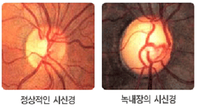
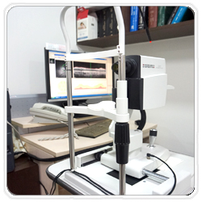
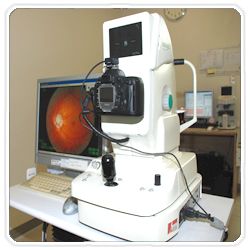

- HOME
- 녹내장
녹내장
녹내장이란 눈 속의 압력변화로 인해 발생하는 모든 눈질환을 말합니다. 우리 눈에는 빛은 밫아들여 뇌로 전달하는 시신경이 손상되어 시야가 좁아지는 병으로 실명을 초래할 수 있습니다.
-
녹내장 증상
-
- 눈의 초점을 맞추기가 어렵다
- 머리가 무겁거나 아프다 (두통)
- 기분이 안 좋고, 오심 및 구토증세가 있다
- 눈이 무겁고 쉽게 피곤을 느낀다
- 눈에 이물감이 있다
- 계단을 내려가기 힘들다
- 안 보이는 부분이 생긴다(시야결손)
- 빛을 보면 주위에 무지개 같은 것(달무리)이 보인다
- 코멘트
-
- 녹내장은 대부분 천천히 진행되기 때문에 어떤 증상도 느끼지 못합니다. 그러나, 급성 녹내장인 경우 한 순간에 눈 속의 압력이 상승하게 되어 여러가지 증상을 느끼게 됩니다.
-
-
초기녹내장 환자
- 명확안 시신경 손강, 시야결손(시신경손상이 진행함에 따라 같이 진행되는 시야결손 양상)
-
검사방법 : 기능검사, 안구 촬영등
치료방법 : 약물치료, 수술치료
- 코멘트
-
- 시신경유두모양과 시야검사결과가 의심스러울 경우 녹내장일 확률이 있습니다.
-
중등도 이상의 녹내장 환자
- 녹내장 증상이 있는 경우, 시력손실로 기능손실이 있는 경우
-
검사방법 : 기능검사
치료방법 : 수술치료, 약물치료
- 증상
-
- 눈의 좌상 후 수개월이 지나면서 수정체낭의 후낭하에 혼탁이 초래되어 시력이 감퇴되는 질환입니다. 안구에 심한 타박상을 입은 경우에 수정체낭이 파열되면 빠르게 수정체 전체에 혼탁이 오며, 수정체 단백질이 전방 내로 유출되어 염증을 초래하고 안압을 상승시키기도 합니다.
- HOME
- 본원소개
녹내장치료
“녹내장 치료법 ”
-
시신경의 차이
 -
치료법 종류
수술치료 1.홍체절개술폐쇄각 녹내장일 경우 방수가 자유롭게 움직일 수 있도록 홍채에 구멍을 만드는 수술. 2.레이저시술당뇨로 인한 혈관생성으로 발생한 녹내장의 경우에는 레이저의 도움을 많이 받을 수 있습니다. 3.선택적 레이저 섬유주 성형술안구에서 방수가 유출되는 통로인 섬유주에 Nd:YAG 레이저를 조사하여 방수의 유출을 증가시키는 기술입니다. 4.그 외의 방법 방수가 흘려나가는 섬유주의 일부분을 제거해내는 여과수술방법이 있습니다.약물치료 1.약물치료 한가지의 약물로 안압 조절이 잘 되지 않는 경우에는 여러 가지 약물을 복합적으로 사용하면 좀 더 효과적인 치료가 이루어 질 수 있습니다.
-
녹내장 검진 시스템
안구CT검사(OCT)

안저촬영검사
